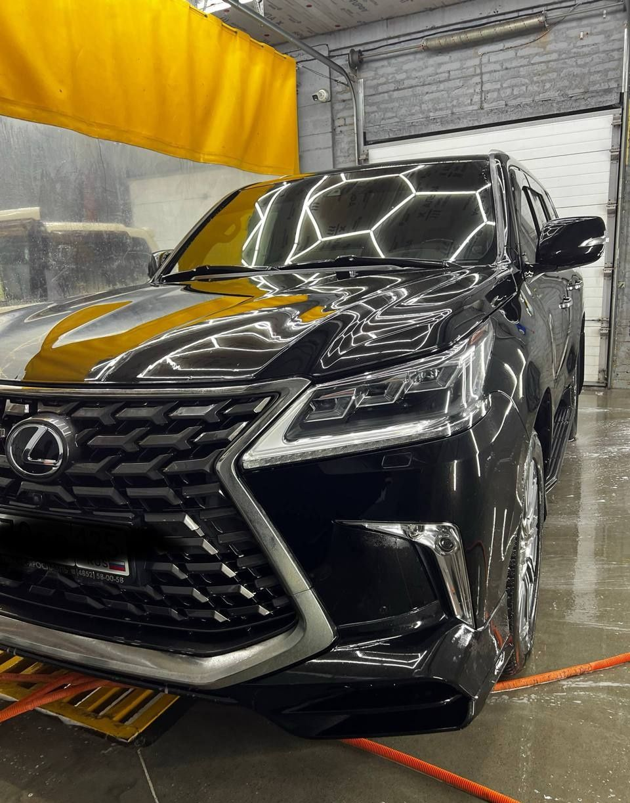
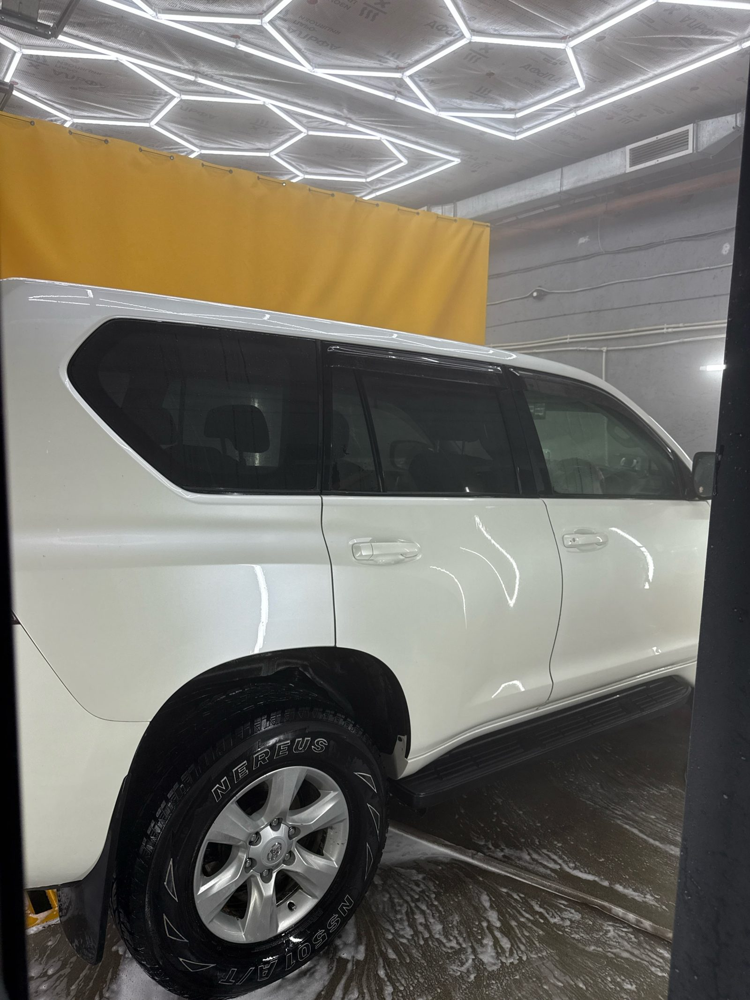

В Вош Ми! моют кузов, двигатель и днище, чистят салон и полируют лак. Заехать можно даже поздно вечером: мойка работает до полуночи.
Вош Ми! — автомойка на улице Майора Филипова, 11 ст4, в Советском районе, вход на первом этаже. Главное здесь — мойка целиком, от крыши до днища и моторного отсека, а ещё химчистка салона и полировка кузова. Пока машину моют, можно посидеть в зале ожидания с Wi-Fi, а кофе или чай взять с собой.

Приехала машина цвета пыли, уезжает своего цвета. Комплексная мойка от 1350 ₽, а её состав подскажут при записи.
Пыль в швах и запах сигарет прошлого владельца уходят из салона. Ездить снова хочется без ароматизатора на зеркале.
Масло теперь можно проверить, не испачкав манжеты: под капотом нет серого налёта.
Эту часть машины почти никто не видит. Грязь из арок и с порогов смывают снизу.
Круговые царапины, заметные на солнце, уходят. Лак выглядит ровным даже на фото крупным планом.
С 09:00 до 24:00 без выходных, так что можно заехать и после позднего рабочего дня.
Ждёте в зале с Wi-Fi, а на выходе можно взять кофе или чай с собой.
Мойка принимает до двух машин сразу.
Платите картой, наличными или по QR-коду.
Заполните форму, позвоните или напишите в WhatsApp или Telegram.
Называете марку и модель, а вам говорят, что подойдёт машине и сколько это будет стоить.
Договариваетесь о дне и часе в любой день недели с 09:00 до 24:00.
Улица Майора Филипова, 11 ст4, вход на первом этаже.
Каждый день с 09:00 до 24:00, запись по телефону, в WhatsApp и Telegram.
Каждый день с 09:00 до 24:00, без выходных.
Владивосток, улица Майора Филипова, 11 ст4, Советский район, первый этаж.
Картой, наличными или по QR-коду.
Комплексная мойка — от 1350 ₽. За химчистку, полировку и мойку днища цену называют отдельно, когда вы сообщите марку и модель по телефону или в мессенджере.
Позвоните, напишите в WhatsApp или Telegram или заполните форму на сайте, и время подберут под вас.
Да, есть зал ожидания с Wi-Fi, а кофе и чай можно взять с собой.
Обычно полировка убирает мелкие царапины, потёртости и помутнение, которые есть только в верхнем лаковом слое. Глубокие царапины, дошедшие до краски или металла, полировкой, как правило, не убрать, их можно только сделать менее заметными.
Соль и реагенты на днище не видно, но они удерживают влагу у металла. Поэтому днище полезно промывать хотя бы после зимы.
При правильной мойке чувствительные элементы и электрику обычно закрывают и не направляют на них сильный напор воды. На чистом двигателе легче заметить подтёки масла или других жидкостей. Кроме того, грязь и пыль на нём не копятся.